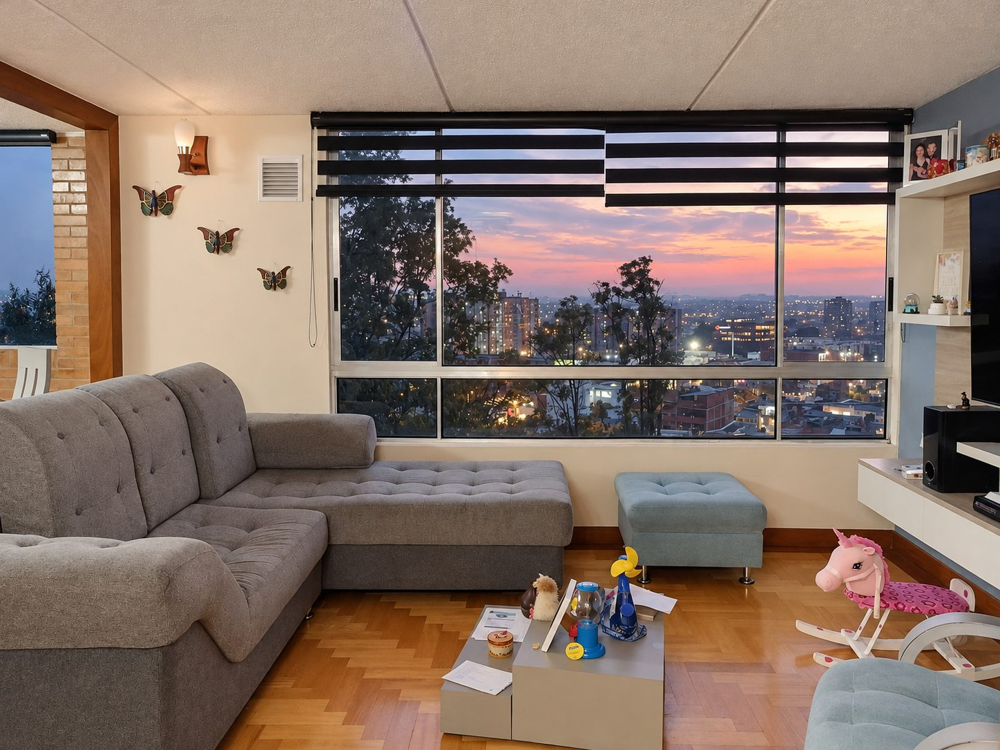
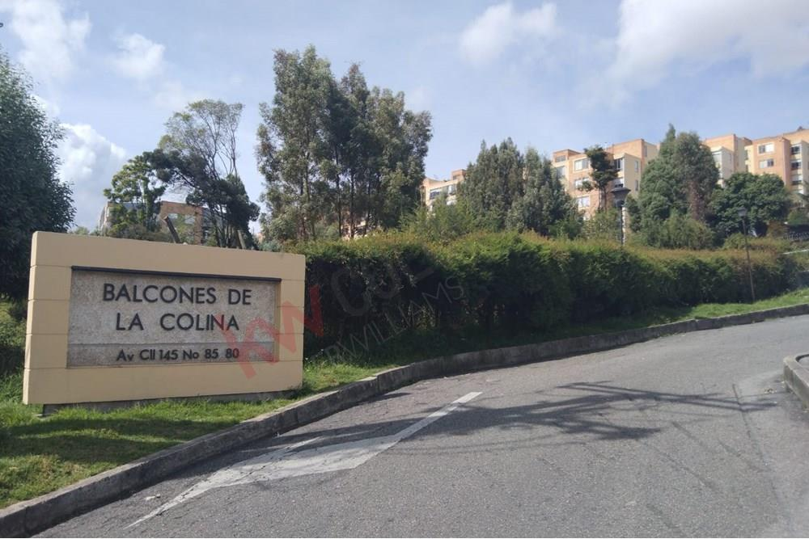
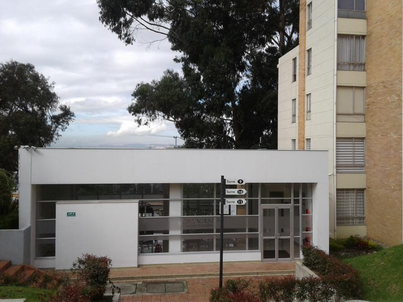

Para recargar energía
Gimnasio para mantener tu rutina sin salir del conjunto.

En venta · balcones de la colina
Luz de tarde, madera cálida y una vista que se abre sobre la ciudad. Un espacio para vivirlo a tu manera.
Av. Calle 145 # 85-80 · Torre 11 · Apto. 543
Los pisos y detalles en madera flor morado le dan carácter a cada ambiente. La distribución conecta sala y comedor con una amplia entrada de luz natural.
Es un apartamento exterior, recibe el sol de la tarde y regala una vista despejada hacia el verde y la ciudad.
Dos alcobas con clósets amplios. El comedor puede adecuarse como una tercera habitación, estudio o espacio de trabajo, según lo que necesites.
Dos baños completos, ambos con ducha. Sala y comedor independientes visualmente, con una conexión cómoda para compartir.
Cocina tipo americana con barra, buen almacenamiento y zona de lavandería integrada con lavadero y espacio para lavadora. Los acabados de madera flor morado aportan una presencia cálida y singular.
El apartamento está identificado como piso 5; el acceso inicia en el piso 2, por lo que se suben cuatro niveles. Una característica útil para tener presente al coordinar tu visita.

Un respiro en la ciudad
Un conjunto rodeado de zonas verdes, con espacios para moverse, reunirse y disfrutar en familia.
balcones de la colina combina espacios comunes para disfrutar en casa con comercio y servicios a pocos minutos.
Gimnasio para mantener tu rutina sin salir del conjunto.
Salón comunal, parque infantil y zonas verdes para disfrutar al aire libre.
Dos porterías: una a una cuadra de la Avenida Suba y otra hacia el sector de La Conejera.
El barrio a tu ritmo
Centros comerciales como Centro Suba y Subazar, supermercados como Ara, D1 y Coratiendas, además de droguerías, ferreterías y comercio de proximidad en el sector.


03 / Ven a conocerlo
Agenda un recorrido y descubre en persona la luz, la vista y los detalles que hacen especial este apartamento.
Precio de venta $320.000.000 COP
Escribir por WhatsApp ↗ange.fonseca@gmail.comEscríbeme para coordinar una visita.